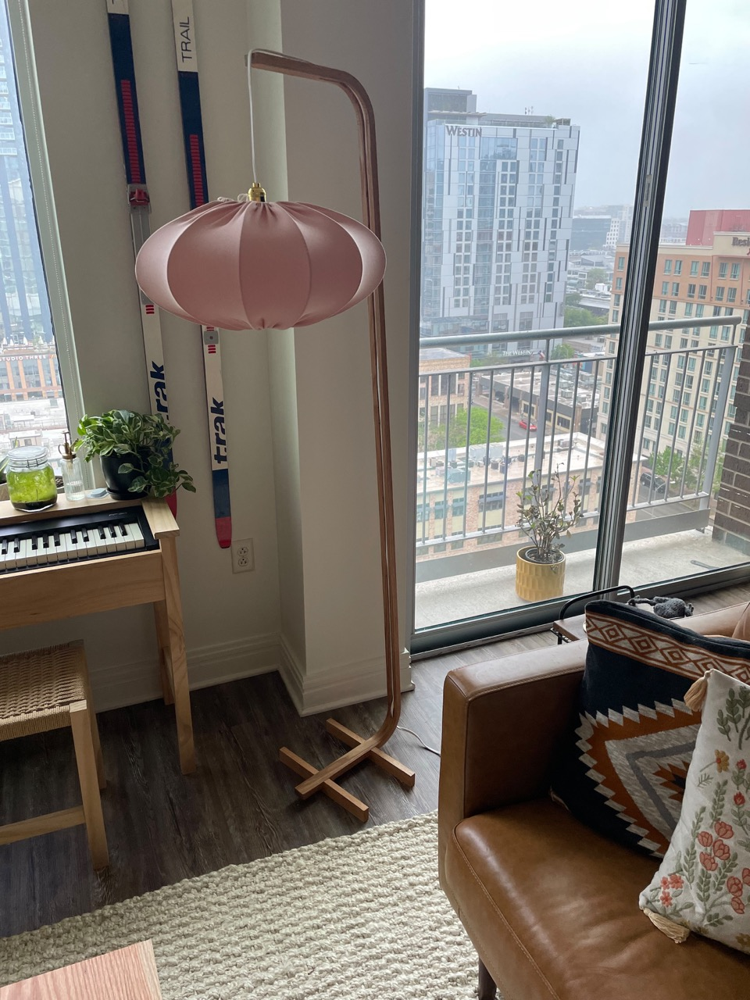
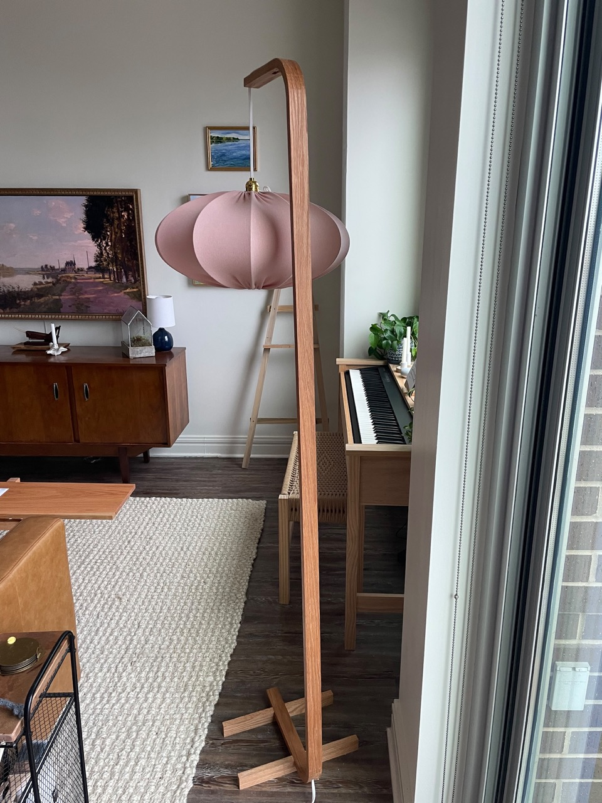
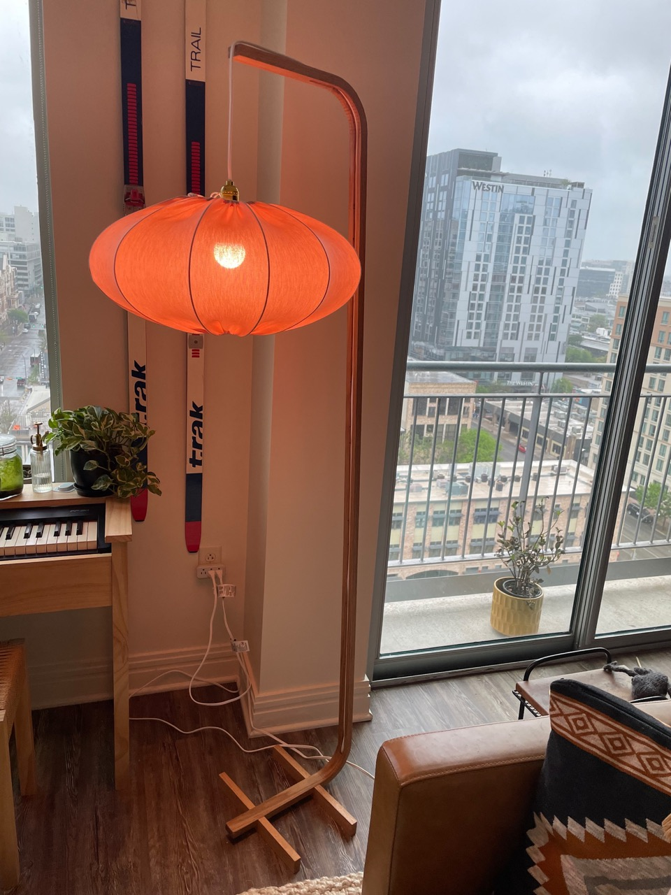

Big Bent Lamp
Saturday 21, January 2023
Note: this post is backdated to reflect when the project was finished
 An iteration on a previous design, this is scaled up floor lamp variation of my bent lamp.
 The construction was essentially the same as the previous post. The biggest difference being that I used a proper shade I purchased from Ikea. I will probably redo the shade at some point, but for now the pink orb works well enough.
